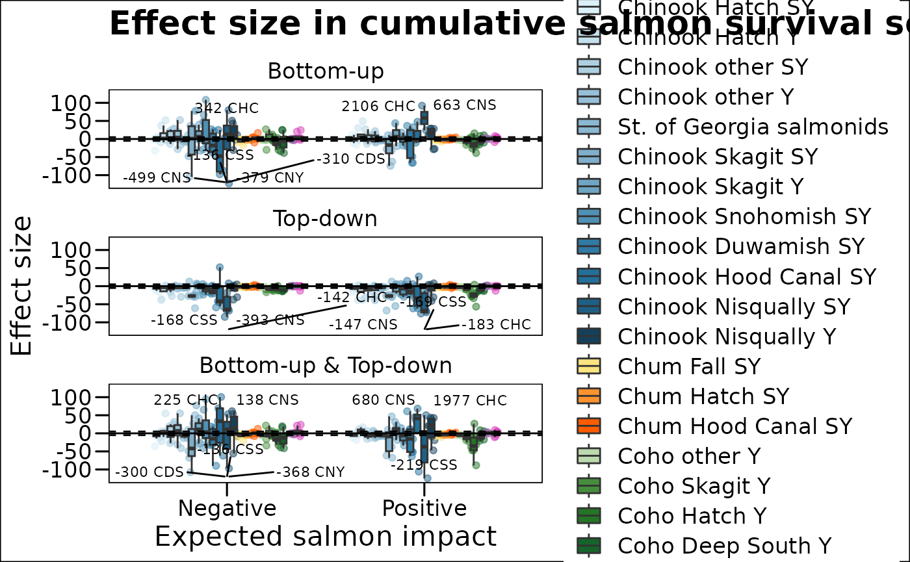
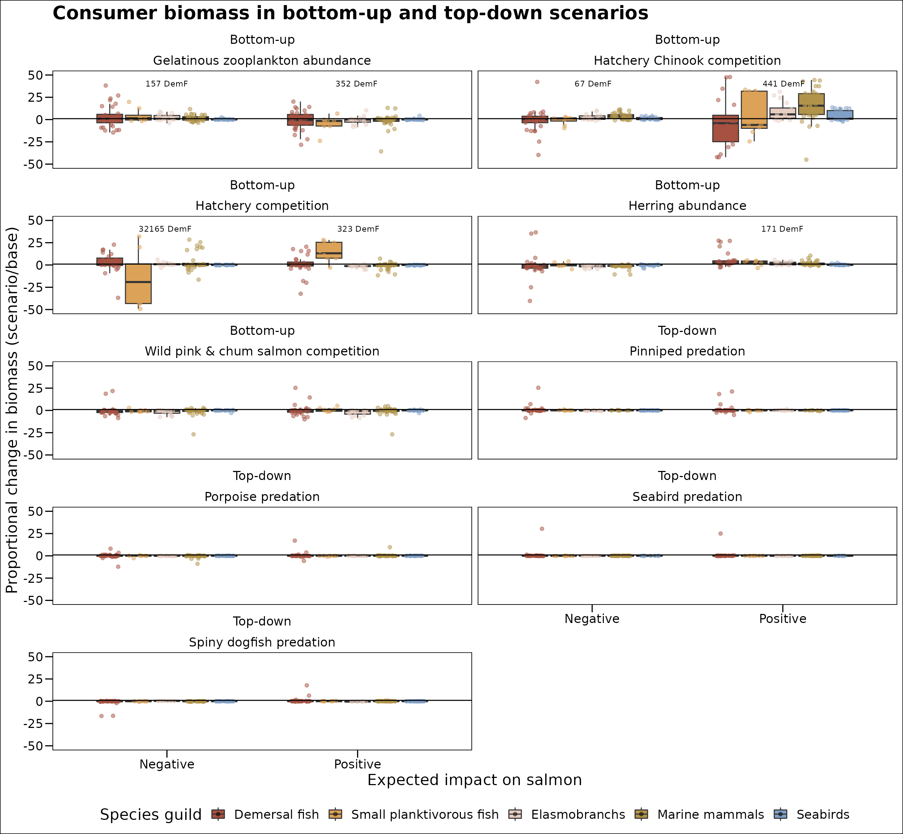

salmon_survival
salmon_survival.RmdPackage for the article Effect of multiple pressures on early marine survival of juvenile salmon in Puget Sound
Hem Nalini Morzaria-Luna”,” I.C. Kaplan, C.J. Harvey, M. Schmidt, E.A. Fulton, R. Girardin, and P. MacCready
install.packages("rnaturalearthhires", repos = "http://packages.ropensci.org", type = "source")## Installing package into '/tmp/RtmphxFbvr/temp_libpath4c42d016c98'
## (as 'lib' is unspecified)
library(pssalmonsurvival)Map of model extent in Puget Sound
#https://www.ngdc.noaa.gov/mgg/shorelines/ A Global Self-consistent, Hierarchical, High-resolution Geography Database
#system("wget https://www.ngdc.noaa.gov/mgg/shorelines/data/gshhg/latest/gshhg-shp-2.3.7.zip")
file.name <- "amps_model_map.png"
make_map(file.name)## Reading layer `bgm_Puget_Sound_89b_0p0001_WGS84' from data source
## `/home/atlantis/pssalmonsurvival/shapefiles/bgm_Puget_Sound_89b_0p0001_WGS84.shp'
## using driver `ESRI Shapefile'
## Simple feature collection with 89 features and 10 fields
## Geometry type: POLYGON
## Dimension: XY
## Bounding box: xmin: -123.8533 ymin: 47.0343 xmax: -122.1955 ymax: 49.08208
## Geodetic CRS: WGS 84
## Reading layer `Puget_Sound_cities_WSG84' from data source
## `/home/atlantis/pssalmonsurvival/shapefiles/Puget_Sound_cities_WSG84.shp'
## using driver `ESRI Shapefile'
## Simple feature collection with 5 features and 8 fields
## Geometry type: POINT
## Dimension: XY
## Bounding box: xmin: -122.9007 ymin: 47.03787 xmax: -122.2021 ymax: 48.75955
## Geodetic CRS: WGS 84
## Reading layer `GSHHS_f_L1' from data source
## `/home/atlantis/pssalmonsurvival/shapefiles/GSHHS_shp/f/GSHHS_f_L1.shp'
## using driver `ESRI Shapefile'
## Simple feature collection with 179837 features and 6 fields
## Geometry type: POLYGON
## Dimension: XY
## Bounding box: xmin: -180 ymin: -68.92453 xmax: 180 ymax: 83.63339
## Geodetic CRS: WGS 84## Scale for 'fill' is already present. Adding another scale for 'fill', which
## will replace the existing scale.
Plot food web
#Plot model food web
data("ppreymatrix")
plot.name <- "ps_foodweb.png"
plot_foodweb(ppreymatrix, plot.name)## Registered S3 method overwritten by 'GGally':
## method from
## +.gg ggplot2## Scale for 'colour' is already present. Adding another scale for 'colour',
## which will replace the existing scale.
Plot salmon time series
salmon.abundance <- readxl::read_xlsx(here::here("modelfiles","Salmon_timeline_Losee.xlsx"), sheet = 1) %>%
# dplyr::rename("Salmon" = `Salmon Sum`) %>%
dplyr::select(-`Salmon Sum`,-Steelhead) %>%
tidyr::pivot_longer(cols=Chinook:Sockeye,names_to = "salmon_group",values_to = "biomass_mt")
plot_salmon_abundance(salmon.abundance)## Warning: `guides(<scale> = FALSE)` is deprecated. Please use `guides(<scale> =
## "none")` instead.
Model ensemble was developed with alternate parametrizations. Plot biomass trajectories based on simulations that run the model ensemble 30 years under constant fishing rates. We only use 6 model variants, 2:5 and 7:8 Model biomass comes from 30-year runs of the base models. There are 8 model variants that differ in invertebrate growth rate and vertebrate density dependence
## [1] 5
## [1] 1## [1] 2## [1] 3## [1] 4## [1] 5## [[1]]
##
## [[2]]
##
## [[3]]
##
## [[4]]
##
## [[5]]
Plot salmon survival for model ensemble for base scenarios, survival is defined as the proportion of age 1 salmon that survive to age 5, the cohort is lagged over time. Also summarises base scenario which get used later to estimate relative survival.
## [1] 6## [[1]]
##
## [[2]]
##
## [[3]]
##
## [[4]]
##
## [[5]]
##
## [[6]]
Make forcings for model simulations, by scenario
Plot salmon survival for scenario results, survival is defined as the proportion of age 1 salmon that survive to age 5, the cohort is lagged over time.
## $`Bottom-up hypotheses`
## [1] "Hatchery Chinook competition" "Hatchery competition"
## [3] "Wild pink & chum salmon competition" "Gelatinous zooplankton abundance"
## [5] "Herring abundance"
##
## [1] "creating range plot"## [1] "creating violin plot"## [1] "creating violin plot scale"## [1] "creating box plot scale"## [1] "creating range plot"## [1] "creating violin plot"## [1] "creating violin plot scale"## [1] "creating box plot scale"## [1] "creating range plot"## [1] "creating violin plot"## [1] "creating violin plot scale"## [1] "creating box plot scale"## [1] "creating plots for scenario effects on salmon"## $`Top-down hypotheses`
## [1] "Pinniped predation" "Porpoise predation"
## [3] "Seabird predation" "Spiny dogfish predation"
##
## [1] "creating range plot"## [1] "creating violin plot"## [1] "creating violin plot scale"## [1] "creating box plot scale"## [1] "creating range plot"## [1] "creating violin plot"## [1] "creating violin plot scale"## [1] "creating box plot scale"## [1] "creating range plot"## [1] "creating violin plot"## [1] "creating violin plot scale"## [1] "creating box plot scale"## [1] "creating plots for scenario effects on salmon"
Plot survival as time series
data("ensemblenumbersagescenarios")
data("salmongroups")
data("indsalmoneffect")
#data("salmoneffect")
survival.rates <- readr::read_csv(here::here("modelfiles","survival_rates.csv"))## Rows: 3003 Columns: 19
## ── Column specification ────────────────────────────────────────────────────────
## Delimiter: ","
## chr (5): scenario_name, scenario_var, Code, Name, Long.Name
## dbl (14): model_ver, age_return, year_sim, return_nums, NumCohorts, migiobox...
##
## ℹ Use `spec()` to retrieve the full column specification for this data.
## ℹ Specify the column types or set `show_col_types = FALSE` to quiet this message.
plot_ensemble_survival_scenarios_timeseries(ensemblenumbersagescenarios, salmongroups, indsalmoneffect)## [1] 3## [1] 3## [[1]]
##
## [[2]]
##
## [[3]]
Extract base survival for cumulative impact scenarios
#numbers at age from base runs
data("ensemblenumberscum")
data("salmongroups")
#plotmodels <- c(1,6) # eliminated model versions 1 & 6
extract_base_cum_survival(ensemblenumberscum, salmongroups)Plot cumulative impact scenarios relative survival
base.cum.survival <- readr::read_csv(here::here("modelfiles","base_cum_survival.csv")) %>%
tidyr::drop_na() %>%
dplyr::mutate(max_year = max(year_no)) %>%
dplyr::filter(year_no<=(max_year-3)) %>%
dplyr::filter(year_no==max(year_no)) ## Rows: 12600 Columns: 18
## ── Column specification ────────────────────────────────────────────────────────
## Delimiter: ","
## chr (4): scenario_name, Code, Name, Long.Name
## dbl (14): scenario_var, model_ver, age_return, year_sim, return_nums, NumCoh...
##
## ℹ Use `spec()` to retrieve the full column specification for this data.
## ℹ Specify the column types or set `show_col_types = FALSE` to quiet this message.
#numbers at age from base runs
data("ensemblenumberscum")
data("salmongroups")
data("salmonbybasin")
data("salmoneffect")
#plotmodels <- c(1,6) # eliminated model versions 1 & 6
plot_ensemble_cum_survival_scenarios(ensemblenumberscum, salmongroups, base.cum.survival, salmonbybasin, salmoneffect)## tibble [145,824 × 12] (S3: tbl_df/tbl/data.frame)
## $ scenario_name: chr [1:145824] "Bottom-up & Top-down" "Bottom-up & Top-down" "Bottom-up & Top-down" "Bottom-up & Top-down" ...
## $ scenario_var : chr [1:145824] "-20%" "-20%" "-20%" "-20%" ...
## $ model_ver : num [1:145824] 1 1 1 1 1 1 1 1 1 1 ...
## $ Code : chr [1:145824] "CDS" "CDS" "CDS" "CDS" ...
## $ age : int [1:145824] 1 1 1 1 1 1 1 1 1 1 ...
## $ year_no : int [1:145824] 2011 2012 2013 2014 2015 2016 2017 2018 2019 2020 ...
## $ max_nums : num [1:145824] 102102 233403 196313 145763 126690 ...
## $ years_away : int [1:145824] 4 4 4 4 4 4 4 4 4 4 ...
## $ Name : chr [1:145824] "ChinookDSY_Fish" "ChinookDSY_Fish" "ChinookDSY_Fish" "ChinookDSY_Fish" ...
## $ Long.Name : chr [1:145824] "Chinook Duwamish Subyearling" "Chinook Duwamish Subyearling" "Chinook Duwamish Subyearling" "Chinook Duwamish Subyearling" ...
## $ NumCohorts : int [1:145824] 5 5 5 5 5 5 5 5 5 5 ...
## $ migiobox : num [1:145824] 0.74 0.74 0.74 0.74 0.74 0.74 0.74 0.74 0.74 0.74 ...
## NULL
Plot interaction effect
## Rows: 3003 Columns: 19
## ── Column specification ────────────────────────────────────────────────────────
## Delimiter: ","
## chr (8): scenario_name, Code, Long.Name, scenario_var, longname, basin, sal...
## dbl (11): model_ver, base_survival, juv_nums.x, return_nums.x, survival, juv...
##
## ℹ Use `spec()` to retrieve the full column specification for this data.
## ℹ Specify the column types or set `show_col_types = FALSE` to quiet this message.## Rows: 1008 Columns: 15
## ── Column specification ────────────────────────────────────────────────────────
## Delimiter: ","
## chr (8): scenario_name, Code, Long.Name, scenario_var, longname, basin, salm...
## dbl (7): model_ver, base_survival, survival, rel_survival, max_model, min_mo...
##
## ℹ Use `spec()` to retrieve the full column specification for this data.
## ℹ Specify the column types or set `show_col_types = FALSE` to quiet this message.
data("scenariocategories")
plot_interaction_effect(ensemble.survival, ensemble.cum.survival, scenariocategories)
Plot predation in cumulative scenarios
data("ensemblepredationcum")
data("salmoneffect")
data("salmonbybasin")
plot_predation(ensemblepredationcum, salmoneffect, salmonbybasin)
plot biomass of higher trophic level guilds
data("ensemblebiomasscum")
data("predgroups")
plot_predators(ensemblebiomasscum, predgroups)
Cite R and packages
package.citations <- c("broom","ggplot2","ggthemes","ggspatial","ggsci","rgdal","rnaturalearth","sf","sp","magrittr","ggforce","dplyr","here","ncdf4","readr",
"stringr","RNetCDF","scales","GGally","network","sna","RColorBrewer","grDevices","colorRamps","colorspace","tidyr","Hmisc","forcats",
"ecotraj","ggnewscale","paletteer","wesanderson","purrr") %>%
purrr::map(citation) %>%
print(style = "text")## [[1]]
## Robinson D, Hayes A, Couch S (2022). _broom: Convert Statistical
## Objects into Tidy Tibbles_. R package version 0.7.12, <URL:
## https://CRAN.R-project.org/package=broom>.
##
## [[2]]
## Wickham H (2016). _ggplot2: Elegant Graphics for Data Analysis_.
## Springer-Verlag New York. ISBN 978-3-319-24277-4, <URL:
## https://ggplot2.tidyverse.org>.
##
## [[3]]
## Arnold J (2021). _ggthemes: Extra Themes, Scales and Geoms for
## 'ggplot2'_. R package version 4.2.4, <URL:
## https://CRAN.R-project.org/package=ggthemes>.
##
## [[4]]
## Dunnington D (2021). _ggspatial: Spatial Data Framework for ggplot2_. R
## package version 1.1.5, <URL:
## https://CRAN.R-project.org/package=ggspatial>.
##
## [[5]]
## Xiao N (2018). _ggsci: Scientific Journal and Sci-Fi Themed Color
## Palettes for 'ggplot2'_. R package version 2.9, <URL:
## https://CRAN.R-project.org/package=ggsci>.
##
## [[6]]
## Bivand R, Keitt T, Rowlingson B (2021). _rgdal: Bindings for the
## 'Geospatial' Data Abstraction Library_. R package version 1.5-28, <URL:
## https://CRAN.R-project.org/package=rgdal>.
##
## [[7]]
## South A (2017). _rnaturalearth: World Map Data from Natural Earth_. R
## package version 0.1.0, <URL:
## https://CRAN.R-project.org/package=rnaturalearth>.
##
## [[8]]
## Pebesma E (2018). "Simple Features for R: Standardized Support for
## Spatial Vector Data." _The R Journal_, *10*(1), 439-446. doi:
## 10.32614/RJ-2018-009 (URL: https://doi.org/10.32614/RJ-2018-009), <URL:
## https://doi.org/10.32614/RJ-2018-009>.
##
## [[9]]
## Pebesma EJ, Bivand RS (2005). "Classes and methods for spatial data in
## R." _R News_, *5*(2), 9-13. <URL:
## https://CRAN.R-project.org/doc/Rnews/>.
##
## Bivand RS, Pebesma E, Gomez-Rubio V (2013). _Applied spatial data
## analysis with R, Second edition_. Springer, NY. <URL:
## https://asdar-book.org/>.
##
## [[10]]
## Bache S, Wickham H (2022). _magrittr: A Forward-Pipe Operator for R_. R
## package version 2.0.3, <URL:
## https://CRAN.R-project.org/package=magrittr>.
##
## [[11]]
## Pedersen T (2021). _ggforce: Accelerating 'ggplot2'_. R package version
## 0.3.3, <URL: https://CRAN.R-project.org/package=ggforce>.
##
## [[12]]
## Wickham H, François R, Henry L, Müller K (2022). _dplyr: A Grammar of
## Data Manipulation_. R package version 1.0.8, <URL:
## https://CRAN.R-project.org/package=dplyr>.
##
## [[13]]
## Müller K (2020). _here: A Simpler Way to Find Your Files_. R package
## version 1.0.1, <URL: https://CRAN.R-project.org/package=here>.
##
## [[14]]
## Pierce D (2021). _ncdf4: Interface to Unidata netCDF (Version 4 or
## Earlier) Format Data Files_. R package version 1.19, <URL:
## https://CRAN.R-project.org/package=ncdf4>.
##
## [[15]]
## Wickham H, Hester J, Bryan J (2021). _readr: Read Rectangular Text
## Data_. R package version 2.1.1, <URL:
## https://CRAN.R-project.org/package=readr>.
##
## [[16]]
## Wickham H (2019). _stringr: Simple, Consistent Wrappers for Common
## String Operations_. R package version 1.4.0, <URL:
## https://CRAN.R-project.org/package=stringr>.
##
## [[17]]
## Michna P, Woods M (2021). _RNetCDF: Interface to 'NetCDF' Datasets_. R
## package version 2.5-2, <URL:
## https://CRAN.R-project.org/package=RNetCDF>.
##
## [[18]]
## Wickham H, Seidel D (2020). _scales: Scale Functions for
## Visualization_. R package version 1.1.1, <URL:
## https://CRAN.R-project.org/package=scales>.
##
## [[19]]
## Schloerke B, Cook D, Larmarange J, Briatte F, Marbach M, Thoen E,
## Elberg A, Crowley J (2021). _GGally: Extension to 'ggplot2'_. R package
## version 2.1.2, <URL: https://CRAN.R-project.org/package=GGally>.
##
## [[20]]
## Butts C (2015). _network: Classes for Relational Data_. The Statnet
## Project (<URL: http://www.statnet.org>). R package version 1.13.0.1,
## <URL: https://CRAN.R-project.org/package=network>.
##
## Butts C (2008). "network: a Package for Managing Relational Data in R."
## _Journal of Statistical Software_, *24*(2). <URL:
## https://www.jstatsoft.org/v24/i02/paper>.
##
## [[21]]
## Butts CT (2020). _sna: Tools for Social Network Analysis_. R package
## version 2.6, <URL: https://CRAN.R-project.org/package=sna>.
##
## [[22]]
## Neuwirth E (2014). _RColorBrewer: ColorBrewer Palettes_. R package
## version 1.1-2, <URL: https://CRAN.R-project.org/package=RColorBrewer>.
##
## [[23]]
## R Core Team (2021). _R: A Language and Environment for Statistical
## Computing_. R Foundation for Statistical Computing, Vienna, Austria.
## <URL: https://www.R-project.org/>.
##
## [[24]]
## Keitt T (2012). _colorRamps: Builds color tables_. R package version
## 2.3, <URL: https://CRAN.R-project.org/package=colorRamps>.
##
## [[25]]
## Zeileis A, Fisher JC, Hornik K, Ihaka R, McWhite CD, Murrell P,
## Stauffer R, Wilke CO (2020). "colorspace: A Toolbox for Manipulating
## and Assessing Colors and Palettes." _Journal of Statistical Software_,
## *96*(1), 1-49. doi: 10.18637/jss.v096.i01 (URL:
## https://doi.org/10.18637/jss.v096.i01).
##
## Zeileis A, Hornik K, Murrell P (2009). "Escaping RGBland: Selecting
## Colors for Statistical Graphics." _Computational Statistics \& Data
## Analysis_, *53*(9), 3259-3270. doi: 10.1016/j.csda.2008.11.033 (URL:
## https://doi.org/10.1016/j.csda.2008.11.033).
##
## Stauffer R, Mayr GJ, Dabernig M, Zeileis A (2009). "Somewhere over the
## Rainbow: How to Make Effective Use of Colors in Meteorological
## Visualizations." _Bulletin of the American Meteorological Society_,
## *96*(2), 203-216. doi: 10.1175/BAMS-D-13-00155.1 (URL:
## https://doi.org/10.1175/BAMS-D-13-00155.1).
##
## [[26]]
## Wickham H, Girlich M (2022). _tidyr: Tidy Messy Data_. R package
## version 1.2.0, <URL: https://CRAN.R-project.org/package=tidyr>.
##
## [[27]]
## Harrell Jr F (2022). _Hmisc: Harrell Miscellaneous_. R package version
## 4.7-0, <URL: https://CRAN.R-project.org/package=Hmisc>.
##
## [[28]]
## Wickham H (2021). _forcats: Tools for Working with Categorical
## Variables (Factors)_. R package version 0.5.1, <URL:
## https://CRAN.R-project.org/package=forcats>.
##
## [[29]]
## De Cáceres M, Coll L, Legendre P, Allen RB, Wiser SK, Fortin M, Hubbell
## RC&S (2019). _Trajectory analysis in community ecology_, volume 89.
## doi: 10.1002/ecm.1350 (URL: https://doi.org/10.1002/ecm.1350).
##
## Sturbois A, De Cáceres M, Sánchez-Pinillos M, Schaal G, Gauthier O, Le
## Mao P, Ponsero A, Desroy. &N (2021). _Extending community trajectory
## analysis : New metrics and representation_, volume 440. doi:
## 10.1016/j.ecolmodel.2020.109400 (URL:
## https://doi.org/10.1016/j.ecolmodel.2020.109400).
##
## [[30]]
## Campitelli E (2022). _ggnewscale: Multiple Fill and Colour Scales in
## 'ggplot2'_. R package version 0.4.7, <URL:
## https://CRAN.R-project.org/package=ggnewscale>.
##
## [[31]]
## Hvitfeldt E (2021). _paletteer: Comprehensive Collection of Color
## Palettes_. R package version 1.3.0, <URL:
## https://github.com/EmilHvitfeldt/paletteer>.
##
## [[32]]
## Ram K, Wickham H (2018). _wesanderson: A Wes Anderson Palette
## Generator_. R package version 0.3.6, <URL:
## https://CRAN.R-project.org/package=wesanderson>.
##
## [[33]]
## Henry L, Wickham H (2020). _purrr: Functional Programming Tools_. R
## package version 0.3.4, <URL: https://CRAN.R-project.org/package=purrr>.
report::cite_packages()## Warning in utils::citation(pkg_name): no date field in DESCRIPTION file of
## package 'pssalmonsurvival'## Warning in utils::citation(pkg_name): could not determine year for
## 'pssalmonsurvival' from package DESCRIPTION file## - Morzaria-Luna H (????). _pssalmonsurvival: Sensitivity analysis of salmon survival in Puget Sound_. R package version 0.0.0.9004.
## - R Core Team (2021). _R: A Language and Environment for Statistical Computing_. R Foundation for Statistical Computing, Vienna, Austria. <URL: https://www.R-project.org/>.
report::report_system()## Analyses were conducted using the R Statistical language (version 4.1.2; R Core
## Team, 2021) on Ubuntu 20.04.3 LTS